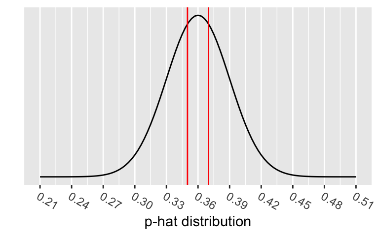
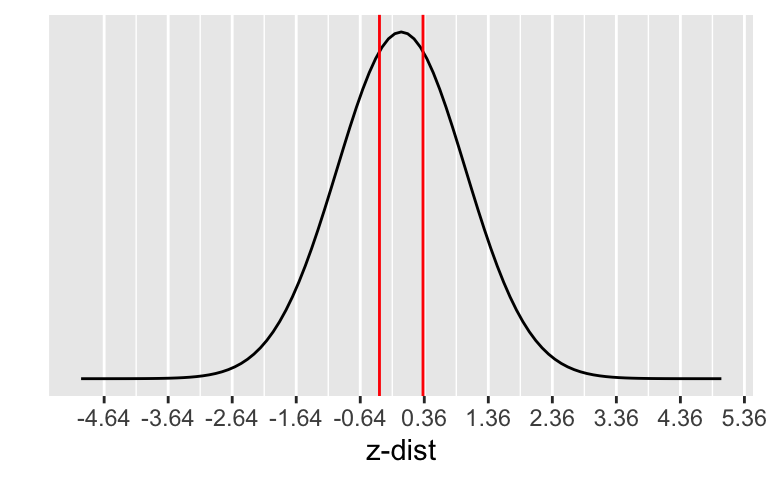
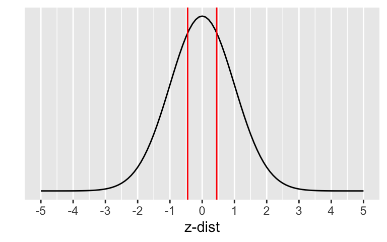
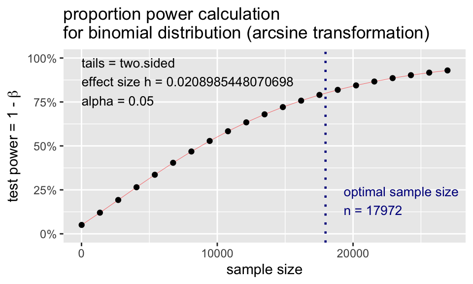
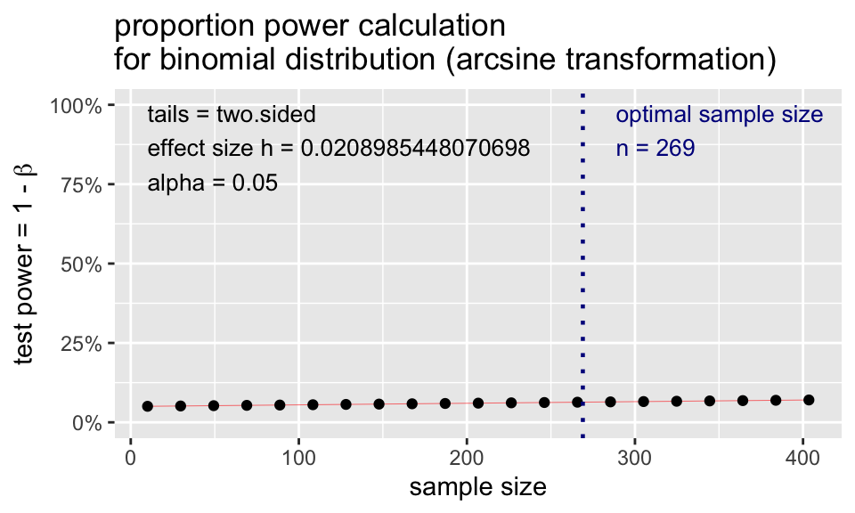
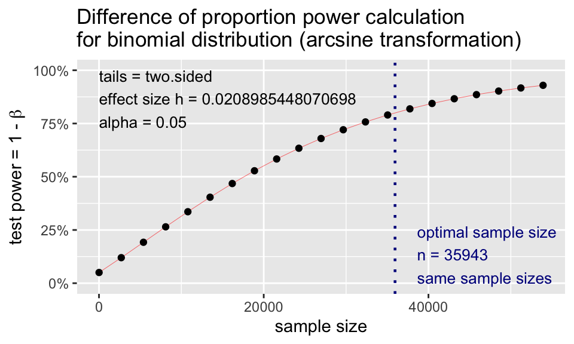
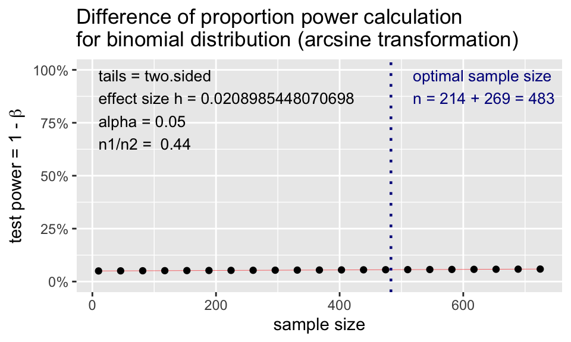

Code
# run these every time you open Rstudio
library(tidyverse)
library(oibiostat)
library(janitor)
library(rstatix)
library(knitr)
library(gtsummary)
library(moderndive)
library(gt)
library(broom)
library(here)
library(pwr) # new-ishBSTA 511/611
# run these every time you open Rstudio
library(tidyverse)
library(oibiostat)
library(janitor)
library(rstatix)
library(knitr)
library(gtsummary)
library(moderndive)
library(gt)
library(broom)
library(here)
library(pwr) # new-ishWith code folding we can hide or show the code in the html output by clicking on the Code buttons in the html file.
Note the </> Code button on the top right of the html output.
See the new options in the yaml above (in the .qmd file).
code-fold: show code-tools: true source: repo
See more information at https://quarto.org/docs/output-formats/html-code.html#folding-code
CI’s and hypothesis tests for different scenarios:
\[\text{point estimate} \pm z^*(or~t^*)\cdot SE,~~\text{test stat} = \frac{\text{point estimate}-\text{null value}}{SE}\]
| Day | Book | Population parameter |
Symbol | Point estimate | Symbol | SE |
|---|---|---|---|---|---|---|
| 10 | 5.1 | Pop mean | \(\mu\) | Sample mean | \(\bar{x}\) | \(\frac{s}{\sqrt{n}}\) |
| 10 | 5.2 | Pop mean of paired diff | \(\mu_d\) or \(\delta\) | Sample mean of paired diff | \(\bar{x}_{d}\) | \(\frac{s_d}{\sqrt{n}}\) |
| 11 | 5.3 | Diff in pop means |
\(\mu_1-\mu_2\) | Diff in sample means |
\(\bar{x}_1 - \bar{x}_2\) | \(\sqrt{\frac{s_1^2}{n_1} + \frac{s_2^2}{n_2}}\) or pooled |
| 12 | 8.1 | Pop proportion | \(p\) | Sample prop | \(\widehat{p}\) | ??? |
| 12 | 8.2 | Diff in pop proportions |
\(p_1-p_2\) | Diff in sample proportions |
\(\widehat{p}_1-\widehat{p}_2\) | ??? |
Sampling distribution for a proportion or difference in proportions
What are \(H_0\) and \(H_a\)?
What are the SE’s for \(\hat{p}\) and \(\hat{p}_1-\hat{p}_2\)?
Hypothesis test
Confidence Interval
How are the SE’s different for a hypothesis test & CI?
How to run proportions tests in R
Power & sample size for proportions tests (extra material)
One proportion
Two proportions
Barnes GM, Welte JW, Hoffman JH, Tidwell MC. Comparisons of gambling and alcohol use among college students and noncollege young people in the United States. J Am Coll Health. 2010 Mar-Apr;58(5):443-52. doi: 10.1080/07448480903540499. PMID: 20304756; PMCID: PMC4104810.
Set the level of significance \(\alpha\)
Specify the null ( \(H_0\) ) and alternative ( \(H_A\) ) hypotheses
Calculate the test statistic.
Calculate the p-value based on the observed test statistic and its sampling distribution
Write a conclusion to the hypothesis test
Null and alternative hypotheses in words and in symbols.
One sample test
\(H_0\): The population proportion of young male college students that participated in sports betting in the previous year is 0.36.
\(H_A\): The population proportion of young male college students that participated in sports betting in the previous year is not 0.36.
\[\begin{align} H_0:& p = 0.36\\ H_A:& p \neq 0.36\\ \end{align}\]
Two samples test
\(H_0\): The difference in population proportions of young male college and noncollege students that participated in sports betting in the previous year is 0.
\(H_A\): The difference in population proportions of young male college and noncollege students that participated in sports betting in the previous year is not 0.
\[\begin{align} H_0:& p_{coll} - p_{noncoll} = 0\\ H_A:& p_{coll} - p_{noncoll} \neq 0\\ \end{align}\]
\[Bin(n,p) \rightarrow N\Big(\mu = np, \sigma = \sqrt{np(1-p)} \Big)\]
\[\hat{p} \sim N\Big(\mu_{\hat{p}} = p, \sigma_{\hat{p}} = \sqrt{\frac{p(1-p)}{n}} \Big)\]
Sampling distribution of \(\hat{p}\) if we assume \(H_0: p=p_0\) is true:
\[\hat{p} \sim N\Big(\mu_{\hat{p}} = p, \sigma_{\hat{p}} = \sqrt{\frac{p(1-p)}{n}} \Big) \sim N\Big( \mu_{\hat{p}}=p_0, \sigma_{\hat{p}}=\sqrt{\frac{p_0\cdot(1-p_0)}{n}} \Big)\]
Test statistic for a one sample proportion test:
\[ \text{test stat} = \frac{\text{point estimate}-\text{null value}}{SE} = z_{\hat{p}} = \frac{\hat{p} - p_0}{\sqrt{\frac{p_0\cdot(1-p_0)}{n}}} \]
Example: A 2010 study found that out of 269 male college students, 35% had participated in sports betting in the previous year.
What is the test statistic when testing \(H_0: p=0.36\) vs. \(H_A: p \neq 0.36\)?
p0 <- 0.36
n <- 269
n*.35[1] 94.15(ph <- 94/n)[1] 0.3494424(SEp <- sqrt(p0*(1-p0)/n))[1] 0.02926612(zp <- (ph-p0)/SEp)[1] -0.3607455\[\begin{align} z_{\hat{p}} &= \frac{94/269 - 0.36}{\sqrt{\frac{0.36\cdot(1-0.36)}{269}}} \\ & -0.3607455 \end{align}\]
Conditions:
Example: A 2010 study found that out of 269 male college students, 35% had participated in sports betting in the previous year.
Testing \(H_0: p=0.36\) vs. \(H_A: p \neq 0.36\).
Are the conditions satisfied?
The p-value is the probability of obtaining a test statistic just as extreme or more extreme than the observed test statistic assuming the null hypothesis \(H_0\) is true.


Calculate the p-value:
\[\begin{align} 2 &\cdot P(\hat{p}<0.35) \\ &= 2 \cdot P\Big(Z_{\hat{p}} < \frac{94/269 - 0.36}{\sqrt{\frac{0.36\cdot(1-0.36)}{269}}}\Big)\\ &=2 \cdot P(Z_{\hat{p}} < -0.3607455)\\ &= 0.7182897 \end{align}\]
2*pnorm(-0.3607455)[1] 0.7182897\[\begin{align} H_0:& p = 0.36\\ H_A:& p \neq 0.36\\ \end{align}\]
Conclusion statement:
What to use for SE in CI formula?
\[\hat{p} \pm z^* \cdot SE_{\hat{p}}\]
Sampling distribution of \(\hat{p}\):
\[\hat{p} \sim N\Big(\mu_{\hat{p}} = p, \sigma_{\hat{p}} = \sqrt{\frac{p(1-p)}{n}} \Big)\]
Problem: We don’t know what \(p\) is - it’s what we’re estimating with the CI.
Solution: approximate \(p\) with \(\hat{p}\):
\[SE_{\hat{p}} = \sqrt{\frac{\hat{p}(1-\hat{p})}{n}}\]
Example: A 2010 study found that out of 269 male college students, 35% had participated in sports betting in the previous year.
Find the 95% CI for the population proportion.
\[\begin{align} 94/269 &\pm 1.96 \cdot SE_{\hat{p}}\\ SE_{\hat{p}} &= \sqrt{\frac{(94/269)(1-94/269)}{269}} \end{align}\]
Interpretation:
We are 95% confident that the (population) proportion of young male college students that participated in sports betting in the previous year is in (0.29, 0.41).
Hypothesis test conditions
\[n_1 p_0 \ge 10, \ \ n_1(1-p_0)\ge 10\]
Confidence interval conditions
\[n_1\hat{p}_1 \ge 10, \ \ n_1(1-\hat{p}_1)\ge 10\]
\[\hat{p}_1 - \hat{p}_2 \sim N \Big(\mu_{\hat{p}_1 - \hat{p}_2} = p_1 - p_2, ~~ \sigma_{\hat{p}_1 - \hat{p}_2} = \sqrt{ \frac{p_1\cdot(1-p_1)}{n_1} + \frac{p_2\cdot(1-p_2)}{n_2}} \Big)\]
where \(p_1\) & \(p_2\) are the population proportions, respectively.
Sampling distribution of \(\hat{p}_1 - \hat{p}_2\): \[\hat{p}_1 - \hat{p}_2 \sim N \Big(\mu_{\hat{p}_1 - \hat{p}_2} = p_1 - p_2, ~~ \sigma_{\hat{p}_1 - \hat{p}_2} = \sqrt{ \frac{p_1\cdot(1-p_1)}{n_1} + \frac{p_2\cdot(1-p_2)}{n_2}} \Big)\]
Since we assume \(H_0: p_1 - p_2 = 0\) is true, we “pool” the proportions of the two samples to calculate the SE:
\[\text{pooled proportion} = \hat{p}_{pool} = \dfrac{\text{total number of successes} }{ \text{total number of cases}} = \frac{x_1+x_2}{n_1+n_2}\]
Test statistic:
\[ \text{test statistic} = z_{\hat{p}_1 - \hat{p}_2} = \frac{\hat{p}_1 - \hat{p}_2 - 0}{\sqrt{\frac{\hat{p}_{pool}\cdot(1-\hat{p}_{pool})}{n_1} + \frac{\hat{p}_{pool}\cdot(1-\hat{p}_{pool})}{n_2}}} \]
\[ \text{test statistic} = z_{\hat{p}_1 - \hat{p}_2} = \frac{\hat{p}_1 - \hat{p}_2 - 0}{\sqrt{\frac{\hat{p}_{pool}\cdot(1-\hat{p}_{pool})}{n_1} + \frac{\hat{p}_{pool}\cdot(1-\hat{p}_{pool})}{n_2}}} \]
\[\text{pooled proportion} = \hat{p}_{pool} = \dfrac{\text{total number of successes} }{ \text{total number of cases}} = \frac{x_1+x_2}{n_1+n_2}\]
Example: A 2010 study found that out of 269 male college students, 35% had participated in sports betting in the previous year, and out of 214 noncollege young males 36% had.
What is the test statistic when testing \(H_0: p_{coll} - p_{noncoll} = 0\) vs. \(H_A: p_{coll} - p_{noncoll} \neq 0\)?
\[\begin{align} z_{\hat{p}_1 - \hat{p}_2} &= \frac{94/269 - 77/214-0}{\sqrt{0.354\cdot(1-0.354)(\frac{1}{269}+\frac{1}{214})}}\\ &=-0.2367497 \end{align}\]
Conditions:
Example: A 2010 study found that out of 269 male college students, 35% had participated in sports betting in the previous year, and out of 214 noncollege young males 36% had.
Testing \(H_0: p_{coll} - p_{noncoll} = 0\) vs. \(H_A: p_{coll} - p_{noncoll} \neq 0\)? .
Are the conditions satisfied?
The p-value is the probability of obtaining a test statistic just as extreme or more extreme than the observed test statistic assuming the null hypothesis \(H_0\) is true.


Calculate the p-value:
\[\begin{align} 2 &\cdot P(\hat{p}_1 - \hat{p}_2<0.35-0.36) \\ &= 2 \cdot P\Big(Z_{\hat{p}_1 - \hat{p}_2} < \\ &\frac{94/269 - 77/214-0}{\sqrt{0.354\cdot(1-0.354)(\frac{1}{269}+\frac{1}{214})}}\Big)\\ &=2 \cdot P(Z_{\hat{p}} < -0.2367497) \end{align}\]
2*pnorm(-0.2367497)[1] 0.812851\[\begin{align} H_0:& p_{coll} - p_{noncoll} = 0\\ H_A:& p_{coll} - p_{noncoll} \neq 0\\ \end{align}\]
Conclusion statement:
What to use for SE in CI formula?
\[\hat{p}_1 - \hat{p}_2 \pm z^* \cdot SE_{\hat{p}_1 - \hat{p}_2}\]
SE in sampling distribution of \(\hat{p}_1 - \hat{p}_2\)
\[\sigma_{\hat{p}_1 - \hat{p}_2} = \sqrt{ \frac{p_1\cdot(1-p_1)}{n_1} + \frac{p_2\cdot(1-p_2)}{n_2}} \]
Problem: We don’t know what \(p\) is - it’s what we’re estimating with the CI.
Solution: approximate \(p_1\), \(p_2\) with \(\hat{p}_1\), \(\hat{p}_2\):
\[SE_{\hat{p}_1 - \hat{p}_2} = \sqrt{ \frac{\hat{p}_1\cdot(1-\hat{p}_1)}{n_1} + \frac{\hat{p}_2\cdot(1-\hat{p}_2)}{n_2}}\]
Example: A 2010 study found that out of 269 male college students, 35% had participated in sports betting in the previous year, and out of 214 noncollege young males 36% had. Find the 95% CI for the difference in population proportions.
\[\frac{94}{269} - \frac{77}{214} \pm 1.96 \cdot SE_{\hat{p}_1 - \hat{p}_2}\]
\[\begin{align} & SE_{\hat{p}_1 - \hat{p}_2}=\\ & \sqrt{ \frac{94/269 \cdot (1-94/269)}{269} + \frac{77/214 \cdot (1-77/214)}{214}} \end{align}\]
Interpretation:
We are 95% confident that the difference in (population) proportions of young male college and noncollege students that participated in sports betting in the previous year is in (-0.127, 0.106).
Hypothesis test conditions
Confidence interval conditions
prop.testprop.test
prop.test is a table() of the datasetCreate a dataset based on the results:
.35*269 # number of "successes"[1] 94.15# round this value
SportsBet1 <- tibble(
Coll = c(rep("Bet", 94),
rep("NotBet",269-94))
)
glimpse(SportsBet1)Rows: 269
Columns: 1
$ Coll <chr> "Bet", "Bet", "Bet", "Bet", "Bet", "Bet", "Bet", "Bet", "Bet", "B…SportsBet1 %>% tabyl(Coll) Coll n percent
Bet 94 0.3494424
NotBet 175 0.6505576R code for proportions test requires input as a base R table:
table(SportsBet1$Coll)
Bet NotBet
94 175 prop.test requires the input x to be a table
prop.test(x = table(SportsBet1$Coll),
alternative = "two.sided",
p = 0.36,
correct = FALSE)
1-sample proportions test without continuity correction
data: table(SportsBet1$Coll), null probability 0.36
X-squared = 0.13014, df = 1, p-value = 0.7183
alternative hypothesis: true p is not equal to 0.36
95 percent confidence interval:
0.2949476 0.4081767
sample estimates:
p
0.3494424 Apply a continuity correction (CC) to the p-value calculation.
prop.test(x = table(SportsBet1$Coll), alternative = "two.sided",
p = 0.36, correct = FALSE) %>% tidy() %>% gt()| estimate | statistic | p.value | parameter | conf.low | conf.high | method | alternative |
|---|---|---|---|---|---|---|---|
| 0.3494424 | 0.1301373 | 0.7182897 | 1 | 0.2949476 | 0.4081767 | 1-sample proportions test without continuity correction | two.sided |
prop.test(x = table(SportsBet1$Coll), alternative = "two.sided",
p = 0.36, correct = TRUE) %>% tidy() %>% gt()| estimate | statistic | p.value | parameter | conf.low | conf.high | method | alternative |
|---|---|---|---|---|---|---|---|
| 0.3494424 | 0.08834805 | 0.7662879 | 1 | 0.2931841 | 0.4100774 | 1-sample proportions test with continuity correction | two.sided |
Differences are small when sample sizes are large.
We first need a dataset based on the results:
.35*269 # number of "successes"[1] 94.15.36*214 # round these value[1] 77.04SportsBet2 <- tibble(
Group = c(rep("College", 269),
rep("NonCollege", 214)),
Bet = c(rep("yes", 94),
rep("no", 269-94),
rep("yes", 77),
rep("no", 214-77))
)
glimpse(SportsBet2)Rows: 483
Columns: 2
$ Group <chr> "College", "College", "College", "College", "College", "College"…
$ Bet <chr> "yes", "yes", "yes", "yes", "yes", "yes", "yes", "yes", "yes", "…SportsBet2 %>% tabyl(Group, Bet) Group no yes
College 175 94
NonCollege 137 77R code for proportions test requires input as a base R table:
table(SportsBet2$Group, SportsBet2$Bet)
no yes
College 175 94
NonCollege 137 77prop.test requires the input x to be a table
prop.test(x = table(SportsBet2$Group, SportsBet2$Bet),
alternative = "two.sided",
correct = FALSE)
2-sample test for equality of proportions without continuity correction
data: table(SportsBet2$Group, SportsBet2$Bet)
X-squared = 0.05605, df = 1, p-value = 0.8129
alternative hypothesis: two.sided
95 percent confidence interval:
-0.07554399 0.09628540
sample estimates:
prop 1 prop 2
0.6505576 0.6401869 Apply a continuity correction (CC) to the p-value calculation.
prop.test(x = table(SportsBet2$Group, SportsBet2$Bet), alternative = "two.sided",
correct = FALSE) %>% tidy() %>% gt()| estimate1 | estimate2 | statistic | p.value | parameter | conf.low | conf.high | method | alternative |
|---|---|---|---|---|---|---|---|---|
| 0.6505576 | 0.6401869 | 0.05605044 | 0.8128509 | 1 | -0.07554399 | 0.0962854 | 2-sample test for equality of proportions without continuity correction | two.sided |
prop.test(x = table(SportsBet2$Group, SportsBet2$Bet), alternative = "two.sided",
correct = TRUE) %>% tidy() %>% gt()| estimate1 | estimate2 | statistic | p.value | parameter | conf.low | conf.high | method | alternative |
|---|---|---|---|---|---|---|---|---|
| 0.6505576 | 0.6401869 | 0.01987511 | 0.8878864 | 1 | -0.07973918 | 0.1004806 | 2-sample test for equality of proportions with continuity correction | two.sided |
Differences are small when sample sizes are large.
\[n=p(1-p)\left(\frac{z_{1-\alpha/2}+z_{1-\beta}}{p-p_0}\right)^2\]
p <- 0.35
p0 <- 0.36
alpha <- 0.05
beta <- 0.20 #power=1-beta; want >=80% power
n <- p*(1-p)*((qnorm(1-alpha/2) + qnorm(1-beta)) /
(p-p0))^2
n[1] 17856.2ceiling(n) [1] 17857We would need a sample size of at least 17,857!
Conversely, we can calculate how much power we had in our example given the sample size of 269.
\[1-\beta= \Phi\left(z-z_{1-\alpha/2}\right)+\Phi\left(-z-z_{1-\alpha/2}\right) \quad ,\quad \text{where } z=\frac{p-p_0}{\sqrt{\frac{p(1-p)}{n}}}\]
\(\Phi\) is the probability for a standard normal distribution
p <- 0.35; p0 <- 0.36; alpha <- 0.05; n <- 269
(z <- (p-p0)/sqrt(p*(1-p)/n))[1] -0.343863(Power <- pnorm(z - qnorm(1-alpha/2)) + pnorm(-z - qnorm(1-alpha/2)))[1] 0.06365242If the population proportion is 0.35 instead of 0.36, we only have a 6.4% chance of correctly rejecting \(H_0\) when the sample size is 269.
pwr for power analysesSpecify all parameters except for the one being solved for.
One proportion
pwr.p.test(h = NULL, n = NULL, sig.level = 0.05, power = NULL, alternative = c("two.sided","less","greater"))
pwr.2p.test(h = NULL, n = NULL, sig.level = 0.05, power = NULL, alternative = c("two.sided","less","greater"))
pwr.2p2n.test(h = NULL, n1 = NULL, n2 = NULL, sig.level = 0.05, power = NULL, alternative = c("two.sided", "less","greater"))
\(h\) is the effect size, and calculated using an arcsine transformation:
\[h = \text{ES.h(p1, p2)} = 2\arcsin(\sqrt{p_1})-2\arcsin(\sqrt{p_2})\]
See PASS documentation for
pwr: sample size for one proportion testpwr.p.test(h = NULL, n = NULL, sig.level = 0.05, power = NULL, alternative = c("two.sided","less","greater"))
h = ES.h(p1, p2)
p1 and p2 are the two proportions being testedSpecify all parameters except for the sample size:
library(pwr)
p.n <- pwr.p.test(
h = ES.h(p1 = 0.36, p2 = 0.35),
sig.level = 0.05,
power = 0.80,
alternative = "two.sided")
p.n
proportion power calculation for binomial distribution (arcsine transformation)
h = 0.02089854
n = 17971.09
sig.level = 0.05
power = 0.8
alternative = two.sidedplot(p.n)
pwr: power for one proportion testpwr.p.test(h = NULL, n = NULL, sig.level = 0.05, power = NULL, alternative = c("two.sided","less","greater"))
h = ES.h(p1, p2)
p1 and p2 are the two proportions being testedSpecify all parameters except for the power:
library(pwr)
p.power <- pwr.p.test(
h = ES.h(p1 = 0.36, p2 = 0.35),
sig.level = 0.05,
# power = 0.80,
n = 269,
alternative = "two.sided")
p.power
proportion power calculation for binomial distribution (arcsine transformation)
h = 0.02089854
n = 269
sig.level = 0.05
power = 0.06356445
alternative = two.sidedplot(p.power)
pwr: sample size for two proportions testpwr.2p.test(h = NULL, n = NULL, sig.level = 0.05, power = NULL, alternative = c("two.sided","less","greater"))
h = ES.h(p1, p2); p1 and p2 are the two proportions being testedSpecify all parameters except for the sample size:
p2.n <- pwr.2p.test(
h = ES.h(p1 = 0.36, p2 = 0.35),
sig.level = 0.05,
power = 0.80,
alternative = "two.sided")
p2.n
Difference of proportion power calculation for binomial distribution (arcsine transformation)
h = 0.02089854
n = 35942.19
sig.level = 0.05
power = 0.8
alternative = two.sided
NOTE: same sample sizesNote: \(n\) in output is the number per sample!
plot(p2.n)
pwr: power for two proportions testpwr.2p2n.test(h = NULL, n1 = NULL, n2 = NULL, sig.level = 0.05, power = NULL, alternative = c("two.sided", "less","greater"))
h = ES.h(p1, p2); p1 and p2 are the two proportions being testedSpecify all parameters except for the power:
p2.n2 <- pwr.2p2n.test(
h = ES.h(p1 = 0.36, p2 = 0.35),
n1 = 214,
n2 = 269,
sig.level = 0.05,
# power = 0.80,
alternative = "two.sided")
p2.n2
difference of proportion power calculation for binomial distribution (arcsine transformation)
h = 0.02089854
n1 = 214
n2 = 269
sig.level = 0.05
power = 0.05598413
alternative = two.sided
NOTE: different sample sizesNote: \(n\) in output is the number per sample!
plot(p2.n2)
CI’s and hypothesis tests for different scenarios:
\[\text{point estimate} \pm z^*(or~t^*)\cdot SE,~~\text{test stat} = \frac{\text{point estimate}-\text{null value}}{SE}\]
| Day | Book | Population parameter |
Symbol | Point estimate | Symbol | SE |
|---|---|---|---|---|---|---|
| 10 | 5.1 | Pop mean | \(\mu\) | Sample mean | \(\bar{x}\) | \(\frac{s}{\sqrt{n}}\) |
| 10 | 5.2 | Pop mean of paired diff | \(\mu_d\) or \(\delta\) | Sample mean of paired diff | \(\bar{x}_{d}\) | \(\frac{s_d}{\sqrt{n}}\) |
| 11 | 5.3 | Diff in pop means |
\(\mu_1-\mu_2\) | Diff in sample means |
\(\bar{x}_1 - \bar{x}_2\) | \(\sqrt{\frac{s_1^2}{n_1} + \frac{s_2^2}{n_2}}\) or pooled |
| 12 | 8.1 | Pop proportion | \(p\) | Sample prop | \(\widehat{p}\) | \(\sqrt{\frac{p(1-p)}{n}}\) |
| 12 | 8.2 | Diff in pop proportions |
\(p_1-p_2\) | Diff in sample proportions |
\(\widehat{p}_1-\widehat{p}_2\) | \(\sqrt{\frac{p_1\cdot(1-p_1)}{n_1} + \frac{p_2\cdot(1-p_2)}{n_2}}\) |